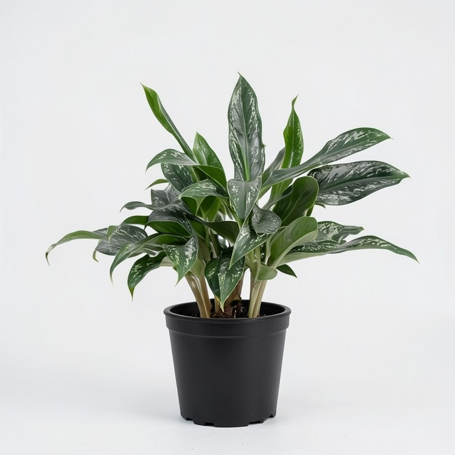
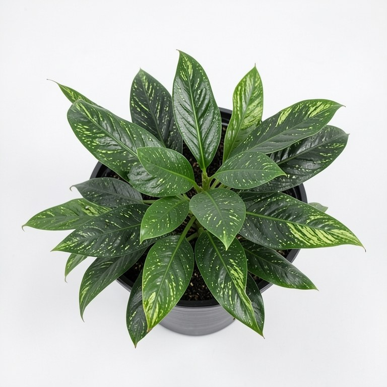

1. front (7.1s) Professional e-commerce product photo of the exact same plant shown in the reference photo (image 0) (Aglaonema Queen Plant). Keep the leaf shape, leaf colour, markings and growth habit identical to the reference photo. Show it as this product variant: Large black plastic pot. front view, plant and pot centered, eye level. plain white studio background, soft diffused studio lighting. Sharp focus, realistic natural colors, high detail, no text, no watermark, no people.

2. side (11.6s) Professional e-commerce product photo of the exact same plant shown in the reference photo (image 0) (Aglaonema Queen Plant). Keep the leaf shape, leaf colour, markings and growth habit identical to the reference photo. Show it as this product variant: Large black plastic pot. three-quarter side view from the left, showing the shape of the plant and the pot. plain white studio background, soft diffused studio lighting. Sharp focus, realistic natural colors, high detail, no text, no watermark, no people.

3. top (6.5s) Professional e-commerce product photo of the exact same plant shown in the reference photo (image 0) (Aglaonema Queen Plant). Keep the leaf shape, leaf colour, markings and growth habit identical to the reference photo. Show it as this product variant: Large black plastic pot. top-down overhead view showing how the leaves are arranged. plain white studio background, soft diffused studio lighting. Sharp focus, realistic natural colors, high detail, no text, no watermark, no people.